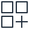

회사 서버가 만든 장애 로그를 실제 네트워크로 게이트웨이에 보내고, 외부 AI에는 걸러진 파생본만 나간다
DKU Cloud단국대 학교 클라우드 (CloudStack)
Zone DKU캠퍼스 내부망 10.0.0.0/16 · 학교 VPN으로만 접속
격리 네트워크 net-32222197192.168.0.0/24
방화벽VPN 대역만 허용
yeogwa-company회사 서버 역할
Small 1CPU·2GB · 192.168.0.236
yeogwa-gw반출 게이트웨이
Medium 2CPU·4GB · 192.168.0.138
발표자 노트북학교 VPN (OpenVPN)받은 주소 10.8.0.x
가상 라우터 · Source NAT 10.0.1.37 (캠퍼스 내부 주소) 2201→gw:22 · 2202→company:22 · 8080→gw:8080

가짜 카드결제 서비스payment_service.py회원ID·카드번호 섞인 로그 기록
로그 전송기shipper.py에러가 몰리면 최근 30초 전송
로그 파일 tail
Spring 게이트웨이 :8080담기 → 경고 → 정책 → 승인 → 감사높음 경고면 승인자에게
H2 DB요청·승인·감사 기록원문은 저장 안 함
AI 키 (.env)VM에서 직접 입력저장소에 안 올림
외부 서비스파생본만 받음
외부 AI (OpenAI)장애 원인 분석 답변
시연 장면 (장애 스위치)회사 VM에서 curl 로 바꿈
none
정상 결제만. 에러가 없어 전송기가 안 보냄
pg_timeout
PG 응답 지연으로 결제 70% 실패. 칸 29 → 10, 높음 경고 0 → 조건부 모드: 요청자가 바로 전송
pg_timeout _leaky
같은 장애인데 개발자가 에러 메시지에 카드번호·회원ID를 찍음. 카드번호 칸은 버려도 메시지 칸에 섞여 들어감 → 높음 경고 36건 → 승인자가 보고 거부
로컬 mock 실측 · 코드: experiments/network-demo
1
SSH 2201·2202 · 승인 화면 8080
VPN 없으면 접속 불가
2
HTTP POST /api/requests
원문 로그 · 내부망 안에서만
3
HTTPS · 파생본만
Source NAT 경유 · 승인 뒤에만
✕ 밖으로 안 나감원본 로그 (회원 ID · 이메일 · 전화 · 카드번호 · 접속 IP) — 학교 클라우드 안에만 있고, 외부 AI에는 칸을 고르고 경고·승인을 통과한 파생본만 간다
학교 클라우드 = 회사망 역할 (원문이 머무는 구간)
외부 AI 구간
① 노트북 → 학교 VPN → 10.0.1.37 포트포워딩으로 VM 접속·승인 화면 ② 회사 VM이 장애 구간 로그를 게이트웨이로 네트워크 전송 (원문) ③ 게이트웨이가 걸러 만든 파생본만 외부 AI로, 답은 승인 화면에 표시 로그는 모두 가짜 값 (카드번호는 Luhn 검사만 맞춘 번호) | 아이콘: AWS Architecture Icons (학교 CloudStack 구성을 AWS 표기로 그림)